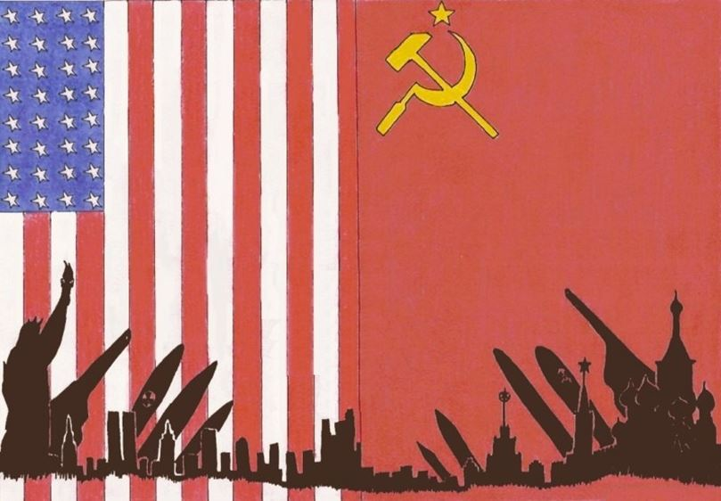
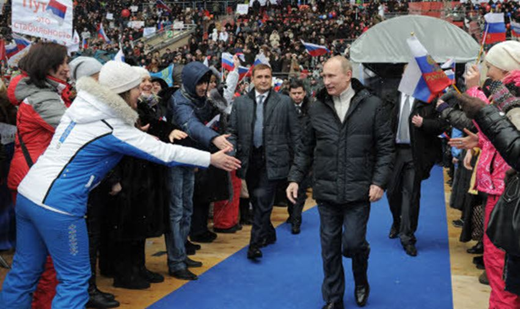

Glaziev, ici avec Poutine, veut rendre la Russie indépendante du contrôle financier des États-UnisLe 25 juillet 2016, après plus de deux années de sanctions occidentales qui ont partiellement atteint l’économie russe, notamment sur le plan monétaire avec un taux d’intérêt des banques centrales sur le rouble à plus de 10 %, Vladimir Poutine a finalement donné son feu vert au club Stolypine contre les libéraux d’Alexeï Koudrine qui avaient amené la Russie dans une récession politiquement et économiquement dangereuse avec leur idéologie de libre marché « à l’occidentale ».
Cette évolution radicale dans le positionnement de la Russie actuelle doit beaucoup au philosophe russe Alexandre Douguine qui œuvre depuis de nombreuses années pour briser l’influence occidentale en Russie. Avec cette prise de décision, le camp de la multipolarité et du renouveau de la Sainte Russie vient de marquer un point décisif contre les agents de la cinquième colonne.
Le club Stolypine, principalement animé par Sergueï Glaziev, un proche conseiller de Vladimir Poutine, s’inspire largement de Friedrich List (1789 – 1846), économiste allemand de génie, critique d’Adam Smith et qui fut à l’origine de la théorie du « protectionnisme éducateur ». Les idées de List ont créé au XIXème siècle la croissance économique la plus impressionnante dans toute l’Europe en seulement trois décennies. Le nouveau modèle de développement de l’économie russe est basé sur les théories de Friedrich List qui fut à l’origine du « miracle allemand ».
Derrière cette information apparemment anodine, vient de se mettre en place pour la première fois depuis 1991, une alternative idéologique totale au Système occidental, ce que j’appelle l’idéologie anglo-saxonne. Jusqu’à la disparition officielle de l’Union soviétique sous Gorbatchev en 1991, le monde se divisait officiellement en deux camps idéologiques : le libéralisme occidental, auto-proclamé « camp de la liberté » et le communisme auto-proclamé « défenseur des opprimés ».
Lors de la mise à mort de l’expérience soviétique, s’effondra en même temps l’alternative idéologique que représentait le marxisme face au libéralisme anglo-saxon. Depuis lors - et c’est à partir de ce moment que se développèrent la théorie sur la fin de l’histoire et la promotion de la pensée unique - les meneurs du Grand Jeu anglo-saxon crurent la partie gagnée car ils n’avaient plus d’adversaire idéologique susceptible de leur opposer une autre vue du monde que la leur.
C’était sans compter sur le réveil de la grande Russie, qui après avoir tâtonné durant un quart de siècle pour redéfinir une alternative au Système, vient d’opter pour un nouvel affrontement – question de vie ou de mort pour elle - avec l’idéologie anglo-saxonne en lui opposant le concept de multipolarité qui n’est en quelque sorte que le retour de la conception westphalienne des rapports entre les nations.
Autrement dit, la Russie vient de ramasser le gant avec lequel elle fut souffletée par les sectateurs de Mammon et elle vient de les gifler à son tour, notamment par l’ultimatum que vient d’adresser Vladimir Poutine aux Etats-Unis dans le cadre de la guerre en Syrie, le premier que recevait Washington depuis 1861.
Pour résumer la querelle entre les partisans de l’Ukraine et ceux de la Russie, notamment à travers l’affrontement meurtrier du Donbass, une seule question se pose : Dis-moi qui te soutient, et je te dirais qui tu es. La réponse est limpide : le régime de Kiev est soutenu par l’occident et il est destiné à créer un abcès de fixation dans le cœur de la Russie –ainsi que l’avait préconisé Zbigniew Brzezinsky – Au-delà de Kiev, la dernière grande capitale du monde eurasiatique qui n’est pas encore tombée dans l’escarcelle des anglo-saxons est Moscou. A partir de ce constat basique, aucune hésitation n’est possible : perfida Albiona delenda est ! ceux qui défendent Kiev et ses bataillons de Galiciens ou Moldo-valaques identitaires sont, nolens, volens, dans le camp du mondialisme. Ceux qui défendent Moscou et les patriotes du Donbass sont dans le camp de la liberté des peuples. En ce qui me concerne, mon choix est fait. Ce n’était d’ailleurs même pas un choix, c’était une évidence.
Partager cette page